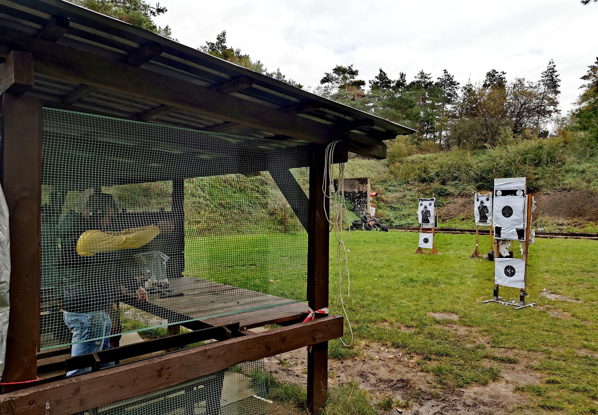
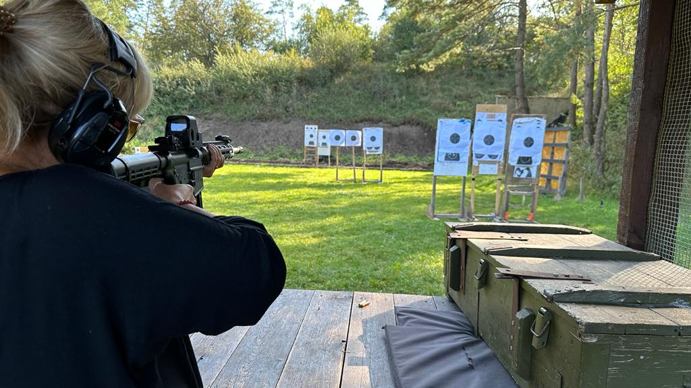
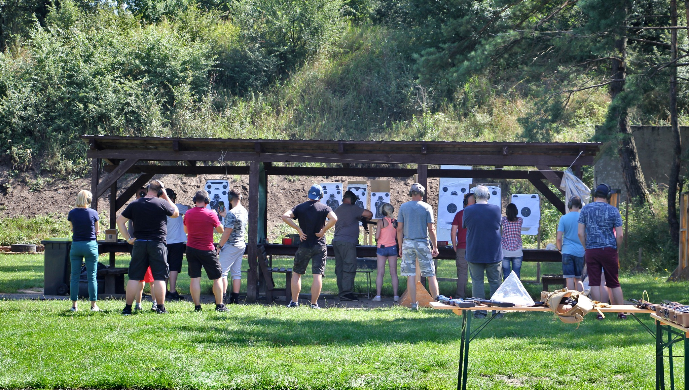
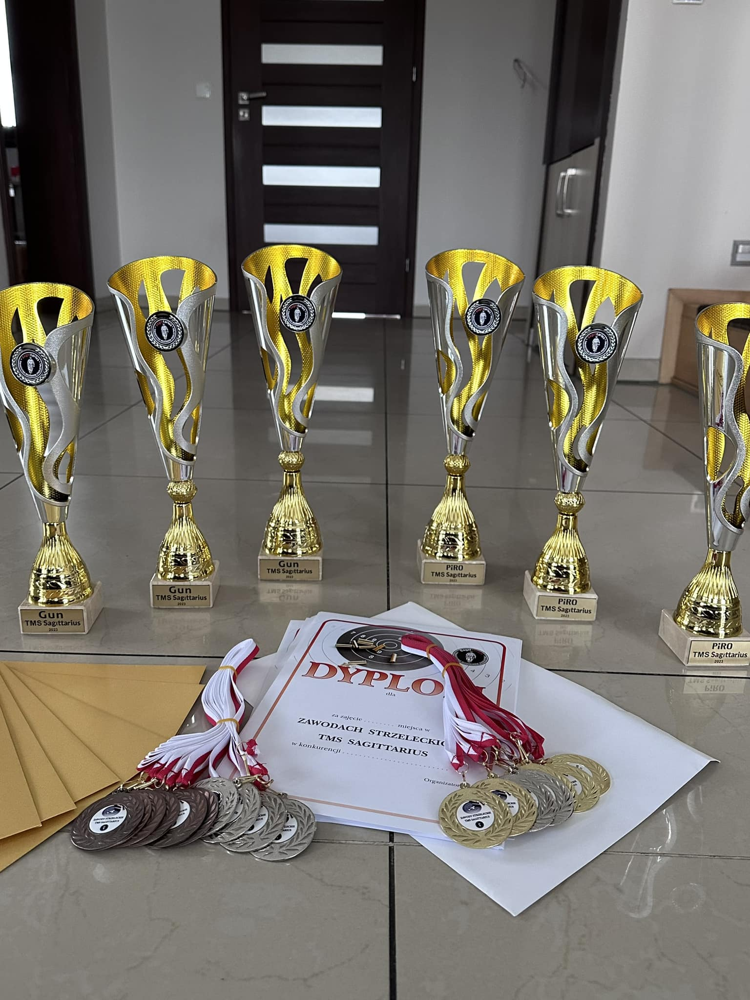
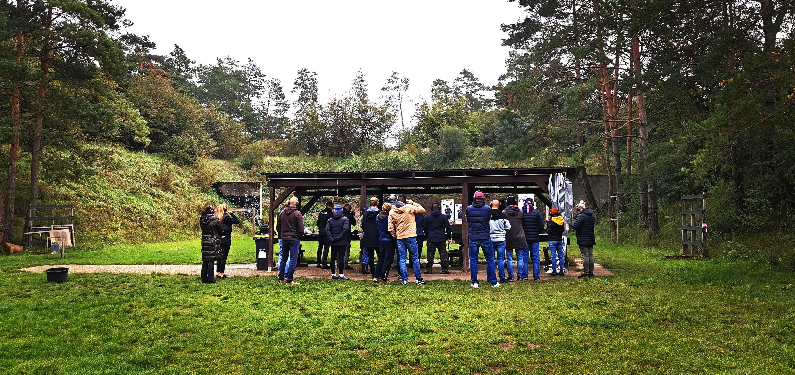
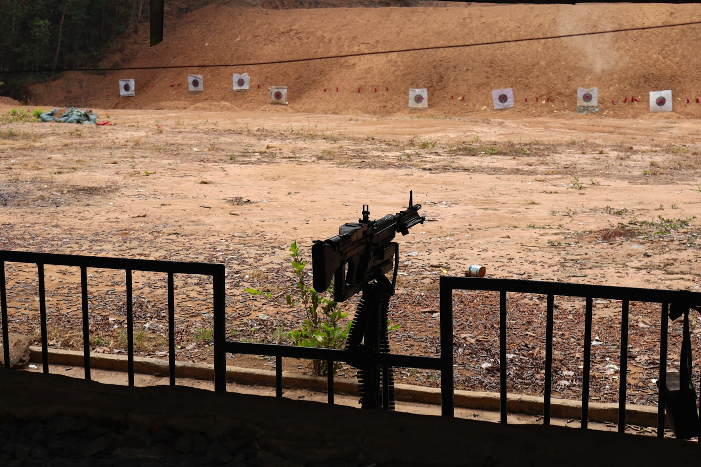

Zawody i licencja PZSS
Treningi, starty w zawodach klubowych i okręgowych, rozwój umiejętności strzeleckich pod okiem sędziów i instruktorów PZSS.

Strzelectwo sportowe | PZSS | OZSS
Rozwijamy strzelectwo sportowe, prowadzimy szkolenia specjalistyczne i wspieramy członków na każdym etapie — od patentu strzeleckiego po licencję zawodniczą PZSS.
O nas
Towarzystwo Miłośników Strzelectwa „Sagittarius” zajmuje się wszechstronnym rozwojem i upowszechnianiem dyscyplin strzelectwa sportowego. Zrzeszamy osoby zajmujące się strzelectwem, prowadzimy szkolenia specjalistyczne i propagujemy strzelectwo jako formę integracji i rekreacji.
Nasza kadra to pasjonaci strzelectwa — praktycy, instruktorzy i sędziowie wywodzący się z Policji, Wojska, Straży Granicznej, Służby Więziennej oraz innych formacji mundurowych. To także eksperci prawa broni i uprawnieni rusznikarze.
Pomagamy w uzyskaniu patentu strzeleckiego, licencji zawodniczej PZSS oraz przygotowaniach do pozwolenia na broń sportową i kolekcjonerską.
Nasze strzelnice






Zdjęcia: archiwum klubu Sagittarius oraz Unsplash (licencja bezpłatna).
Sekcje
Treningi, starty w zawodach klubowych i okręgowych, rozwój umiejętności strzeleckich pod okiem sędziów i instruktorów PZSS.
Wsparcie w procedurach związanych z pozwoleniem kolekcjonerskim, wymianą wiedzy o broni historycznej i bezpiecznym jej użytkowaniu.
Kursy dla początkujących i zaawansowanych: bezpieczeństwo, pierwsza pomoc, taktyka, samoobrona oraz przygotowanie do patentu strzeleckiego.
Oferta klubowa
Cykliczne kursy i warsztaty prowadzone przez instruktorów z wieloletnim doświadczeniem w służbach mundurowych i sporcie strzeleckim.
Organizujemy zawody dla osób czynnie uprawiających strzelectwo sportowe dzięki członkostwu w Polskim Związku Strzelectwa Sportowego.
Pomoc w uzyskaniu patentu strzeleckiego, licencji zawodniczej PZSS oraz monitorowanie etapów pozwolenia na broń.
Realizujemy projekty edukacyjne we współpracy z instytucjami oświatowymi i wychowawczymi w regionie opolskim.
Jak dołączyć
Uzupełnij formularz online. System przygotuje deklarację członkostwa i wyśle potwierdzenie na Twój e-mail.
Dołącz podpisaną deklarację członkowską, dowód wpłaty wpisowego oraz — jeśli wymagane — zaświadczenie o niekaralności.
Zarząd rozpatruje wniosek uchwałą. Po przyjęciu otrzymujesz potwierdzenie członkostwa i dostęp do aktywności klubowych.
Zarząd
Witold Apolinarski
Krzysztof Ptak
Andrzej Malinowski
Rafał Zelent
Przemysław Majcher
Leszek Zinko
Artur Zmysłowski
Lokalizacje
Strzelnica klubowa przy lotnisku. Stanowiska treningowe i zawodowe dla członków sekcji sportowej i szkoleniowej.
Druga lokalizacja klubu — zajęcia sekcji, szkolenia i spotkania organizacyjne dla członków z regionu krapkowickiego.
Członkostwo
Wypełnij formularz — przygotujemy deklarację i prześlemy ją do weryfikacji zarządowi. Po zatwierdzeniu otrzymasz potwierdzenie członkostwa.
FAQ
Pełnoletni obywatel RP z pełną zdolnością do czynności prawnych, korzystający z pełni praw publicznych, zainteresowany strzelectwem i gotowy wspierać cele stowarzyszenia — zgodnie ze statutem TMS „Sagittarius”.
Deklaracja członkostwa, rekomendacja członka klubu, zaświadczenie o niekaralności za przestępstwo umyślne (nie starsze niż 30 dni). Funkcjonariusze służb mundurowych i osoby z pozwoleniem na broń są zwolnieni z zaświadczenia o niekaralności.
Tak. Prowadzimy szkolenia i wspieramy członków w procesie uzyskania patentu strzeleckiego oraz licencji zawodniczej PZSS, a także monitorujemy etapy pozwolenia na broń sportową i kolekcjonerską.
Zarząd rozpatruje wniosek w drodze uchwały. Czas zależy od kompletności dokumentów — po wysłaniu formularza otrzymasz informację o brakujących elementach.
Statut i deklaracja RODO są dostępne do pobrania: Statut TMS „Sagittarius”, Deklaracja RODO. Formularz online generuje deklarację automatycznie na podstawie podanych danych.
Kontakt
Napisz do nas — odpowiemy w sprawie wniosków, dokumentów i terminów zajęć klubowych.